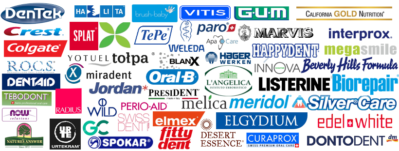

Добро пожаловать в интернет-магазин «ДенталГид»!
Магазин «ДенталГид» предлагает лучшие и профессиональные товары для лечения и профилактики заболеваний полости рта Европейского качества* Мы работаем только напрямую с официальными дистрибьюторами продукции и стараемся предложить Вам самые приятные цены. Интернет-магазин «ДенталГид» — это возможность приобрести современные средства гигиены, не выходя из дома. Мы позаботились о том, чтобы вам не пришлось тратить время на раздумья и лишние поиски. Мы стараемся сделать все, чтобы это было удобно и быстро. Поиск наиболее подходящего вам средства занимает буквально несколько секунд. Подробная информация о составе и назначении средств гигиены, которые представлены в нашем магазине, поможет быстро сориентироваться и выбрать средства именно для Вас. Вам буде предоставлена информация о новинках и акционных предложениях компаний. При возникновении вопросов Вы всегда можете обратиться к консультанту нашего магазина. Полученные рекомендации облегчат Ваш выбор, ведь в вопросах гигиены нужен индивидуальный подход. Наша профессиональная команда приложит все усилия, чтобы доставить качественный товар в указанный Вами срок. Оставлять заказы на нашем сайте Вы можете в любое удобное для Вас время. Мы работаем для Вас! Помните главное: профилактика и своевременное обращение к доктору-стоматологу, надолго сохранит здоровье Ваших зубов, красивую улыбку и существенно снизит затраты.